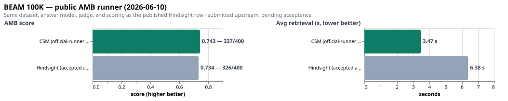
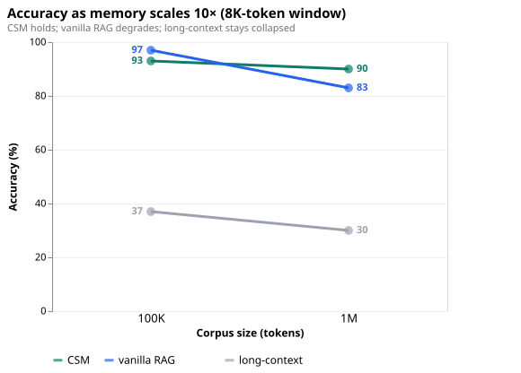
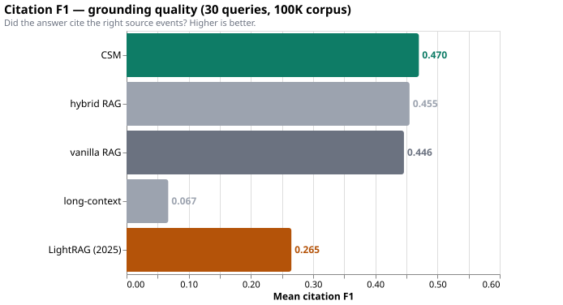
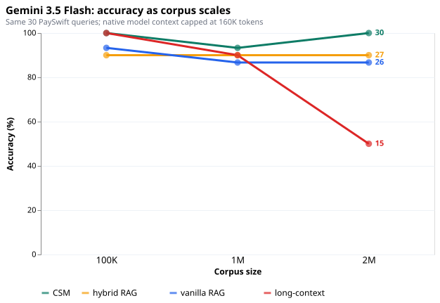
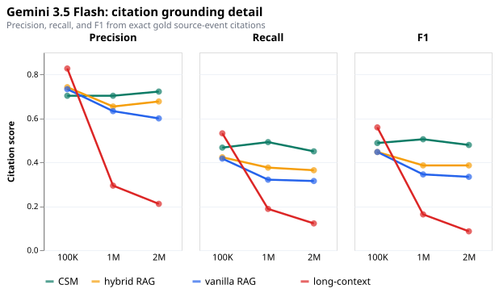
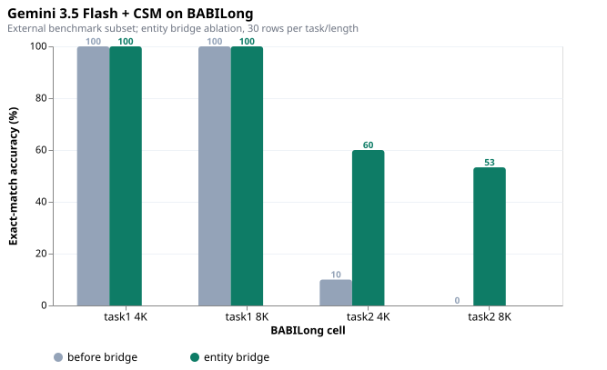
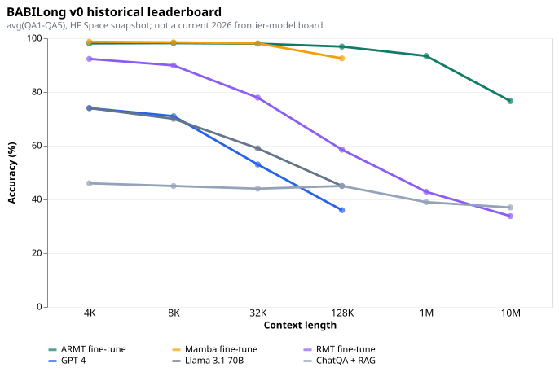
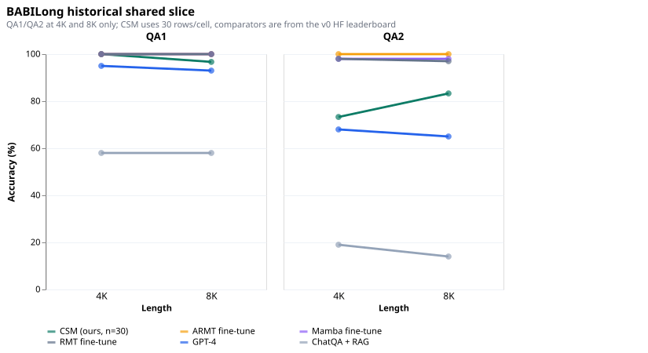

Open-source memory infrastructure
Context Swarm Memory
Bounded read-only shards for cited long-term AI memory.
Memory whose edge grows as it scales.
CSM routes a query through immutable memory shards, probes for relevant evidence, recalls only from useful snapshots, and synthesizes a compact cited packet. Durable memory changes only through explicit Committer-gated writes.
A memory layer engineered for auditability.
CSM is an R&D memory system for long-running agents. It treats memory as bounded, inspectable shards rather than one ever-growing prompt. The read path is branch-and-discard; the write path is Committer-only.
Scope note: the scaling thesis is supported by the synthetic and Gemini scaling runs, where CSM stays stable as corpus size grows while RAG and long-context baselines degrade. The completed BEAM result is a full 100K Hindsight head-to-head, not yet a multi-scale BEAM study.
Measured claims, labeled with their limits.
The public evidence bundle separates the north-star BEAM/Hindsight comparison from synthetic scaling, Gemini cross-model checks, and BABILong diagnostics.

CSM vs Hindsight, in one quotable paragraph.
Context Swarm Memory (CSM) beats the accepted local Hindsight BEAM 100K artifact in the committed full comparison: CSM scores 0.757573 with 342/400 correct rows, while Hindsight scores 0.733658 with 326/400 correct rows. CSM uses 38.2% fewer answer-visible context tokens, but retrieval is slower at 29.23s average versus Hindsight at 6.38s. This is a local accepted-artifact comparison, not yet an official leaderboard certification.







Probe, recall, synthesize, then discard.
CSM spends context only after routing finds plausible shards. Shard snapshots are immutable, LLM providers stay behind a seam, and query-time reads do not mutate durable memory.
- Memory Manager routes by tags, lexical evidence, and local recall floors.
- Probe and recall operate on bounded shard context instead of the whole corpus.
- Committer is the only durable write path.
Concise answer, cited source IDs, conflict flags, and explicit uncertainty.
Claims are backed by checked artifacts.
The verifier hashes committed evidence rows and recomputes headline metrics, citation F1, McNemar checks, and the BEAM CSM-vs-Hindsight summary.
npm install
npm test
npm run build
npm run verify:published
npm run amb:patch -- --amb-dir /path/to/agent-memory-benchmark